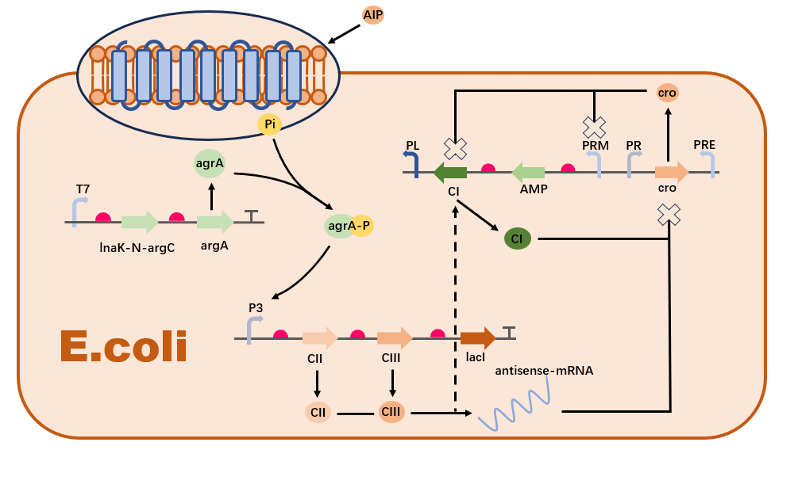

<!DOCTYPE html>
<html lang="en">

<head>
    <meta charset="UTF-8" />
    <meta name="viewport" content="width=device-width, initial-scale=1.0" />
    <!-- 引入css -->
    <link rel="stylesheet" href="css/style.css" />
    <link rel="stylesheet" href="icon/menu/iconfont.css">
    <script src="js/jquery.js"></script>
    <script src="https://cdnjs.cloudflare.com/ajax/libs/mathjax/2.7.5/MathJax.js?config=TeX-AMS_HTML" async></script>
    <script type="text/x-mathjax-config;executed=true">
        window.MathJax.Hub.Config({
            showProcessingMessages: false, //关闭js加载过程信息
            messageStyle: "none", //不显示信息
            jax: ["input/TeX", "output/HTML-CSS"],
            tex2jax: {
                inlineMath: [["$", "$"], ["\\(", "\\)"]], //行内公式选择符
                displayMath: [["$$", "$$"], ["\[", "\]"]], //段内公式选择符
                skipTags: ["script", "noscript", "style", "textarea", "pre", "code", "a"] //避开某些标签
            },
            "HTML-CSS": {
                availableFonts: ["STIX", "TeX"], //可选字体
                showMathMenu: false //关闭右击菜单显示
            }
        });
        //下面第三个参数可以不写，默认对整个html内的latex进行翻译
        window.MathJax.Hub.Queue(["Typeset", MathJax.Hub,document.getElementsByClassName("ck-content")]);
    </script>
    <title>Model</title>
</head>
<style>
    @font-face {
        font-family: "Moon";
        src: url("font/MoonTypeFreeDemo-gwjr5.otf");
    }

    @font-face {
        font-family: "Milane";
        src: url("font/MilanelloFree-51Lwv.otf");
    }

    @font-face {
        font-family: "Tirto";
        src: url("font/TirtoWritterRegular-Eajrl.ttf");
    }

    @font-face {
        font-family: 'iconfont';
        src: url('iconfont.ttf?t=1708579574327') format('truetype');
    }

    .title {
        color: #546ca4;
        right: 10%;
        position: absolute;
        top: 38%;
        font-size: 120px;
        font-family: "Milane";
        text-align: right;
    }

    .quote {
        display: flex;
        flex-direction: row;
        /* justify-content: space-between; */
        margin: 0px;
    }

    .line {
        width: 5px;
        background-color: #adbef9;
        margin: 0px;
    }
</style>

<body>
    <div class="BOX">
        <div class="TOP">
            <div>
                <p class="Level_1_heading">Project</p>
                <a href="design.html" class="Secondary_headings">Design</a>
                <a href="safety.html" class="Secondary_headings">Safety</a>
                <a href="implementation.html" class="Secondary_headings">Implementation</a>
            </div>
            <div>
                <p class="Level_1_heading">Wet Lab</p>
                <a href="engineering.html" class="Secondary_headings">Engineering</a>
                <a href="construction.html" class="Secondary_headings">Construction</a>
                <a href="protocol.html" class="Secondary_headings">Protocol</a>
                <a href="Parts.html" class="Secondary_headings">Parts</a>
            </div>
            <div>
                <p class="Level_1_heading">Dry Lab</p>
                <a href="hardware.html" class="Secondary_headings">Hardware</a>
                <a href="software.html" class="Secondary_headings">Software</a>
                <a href="Model.html" class="Secondary_headings">Model</a>
            </div>
            <div>
                <p class="Level_1_heading">HP</p>
                <a href="overview.html" class="Secondary_headings">Overview</a>
                <a href="intergrated HP.html" class="Secondary_headings">Intergrated human practice</a>
                <a href="education.html" class="Secondary_headings">Education</a>
                <a href="entrepreneurship.html" class="Secondary_headings">Entrepreneurship</a>
            </div>
            <div>
                <p class="Level_1_heading">Team</p>
                <a href="member.html" class="Secondary_headings">Member</a>
                <a href="attributions.html" class="Secondary_headings">Attributions</a>
                <a href="contribution.html" class="Secondary_headings">Contribution</a>
            </div>
        </div>
        <div class="top">
            
            <div class="caidan"></div>
        </div>
        <div class="banner" style="background-color: aliceblue;background-image: none;">
            <h1 class="title">Model</h1>
        </div>
        <div class="box">
            <div class="menu">
                <div class="blank"></div>
                <div class="nav">
                    <a href="#tit_1" class="Level_1_heading scroll">Model Description</a>
                    <a href="#tit_2" class="Secondary_headings scroll">Gene regulatory networks based on AIP</a>
                    <a href="#tit_3" class="Secondary_headings scroll">the Generalized Lotka-Volterra (GLV) model</a>
                    <a href="#tit_4" class="Secondary_headings scroll">Signal molecule diffusion dynamics</a>
                    <a href="#tit_5" class="Secondary_headings scroll">The application of the diffusion
                        Fisher-Kolmogorov
                        equation and the Monod equation</a>
                    <a href="#tit_6" class="Level_1_heading scroll">Gene regulatory networks based on AIP</a>
                    <a href="#tit_7" class="Secondary_headings scroll">Staphylococcus aureus Response Parts</a>
                    <a href="#tit_8" class="Secondary_headings scroll">CI Self Regulation Parts</a><br />
                    <a href="#tit_9" class="Secondary_headings scroll">cross-regulation Parts</a>
                    <a href="#tit_10" class="Level_1_heading scroll">Modelling of colony interactions</a>
                    <a href="#tit_11" class="Secondary_headings scroll">experimental data</a>
                    <a href="#tit_12" class="Secondary_headings scroll">Basic Model</a>
                    <br />
                    <a href="#tit_13" class="Secondary_headings scroll">Application to Our Project</a>
                    <br />
                    <a href="#tit_14" class="Level_1_heading scroll">Diffusion dynamics modelling of signalling
                        molecules</a>
                    <a href="#tit_15" class="Secondary_headings scroll">General diffusion equation</a>
                    <a href="#tit_8" class="Secondary_headings scroll">Kinetic equations for the signalling molecule
                        AHL</a><br />
                    <a href="#tit_9" class="Secondary_headings scroll"> Dynamics Equations for Pseudomonas aeruginosa
                        Release of AIP and Escherichia coli Secretion of
                        AMP</a>
                    <a href="#tit_10" class="Level_1_heading scroll">Modelling of colony interactions</a>
                    <a href="#tit_11" class="Secondary_headings scroll">experimental data</a>
                    <a href="#tit_12" class="Secondary_headings scroll">Basic Model</a>
                    <br />
                    <a href="#tit_13" class="Secondary_headings scroll">Application to Our Project</a>
                    <br />
                    <a href="#tit_14" class="Level_1_heading scroll">Diffusion dynamics modelling of signalling
                        molecules</a>
                    <a href="#tit_15" class="Secondary_headings scroll">General diffusion equation</a>
                    <div class="animation"></div>
                </div>
            </div>
            <div class="text" style="position: relative;">
                <div class="cover" style="width: 100%; height: 70px; position: sticky; top: 0%;"></div>
                <div>
                    <h1 style="border-bottom: 3px solid #adbef9;font-size: 38px;line-height: 52px;margin-bottom: 10px;">
                        Panoramic Simulation: From Molecular
                        Mechanisms to Macroscopic Ecological
                        Dynamics</h1>
                    <p>
                        This page outlines the mathematical models of our research project,
                        aimed at comprehensively understanding and predicting the behavior
                        and antibacterial effects of engineered Escherichia coli in simulated
                        gut environments, from the molecular level to community ecological
                        dynamics, through a series of model components.
                    </p>
                </div>
                <div>
                    <h1 id="tit_1" class="page">Model Description</h1>
                    <p>
                        The models implemented in this project achieve comprehensive simulation
                        from molecular mechanisms to macroscopic molecular diffusion and population growth. They
                        demonstrate the feasibility of the design pathway and
                        foreshadow the far-reaching impacts of our research.
                        <br>Our project’s models consist of the following four main components:
                    </p>
                </div>
                <div>
                    <h2 id="tit_2" class="page">Gene regulatory networks based on AIP</h2>
                    <p>
                        Firstly, we designed a gene regulatory network based on AIP (Autoinducing
                        Peptide) to sense the concentration of Staphylococcus aureus in the environment and regulate
                        the expression of antimicrobial peptides (AMPs) in
                        Escherichia coli. This network consists of four main regulatory circuits: a
                        positive feedback loop where AIP activates the expression of CII and CIII
                        proteins, a negative feedback loop where CI and antisense mRNA inhibit the
                        expression of Cro protein, a self-regulating loop of CI, and a cross-regulatory
                        loop where CII, CIII, and Cro inhibit the expression of CI.
                    </p>
                </div>
                <div>
                    <h2 id="tit_3" class="page">the Generalized Lotka-Volterra (GLV) model</h2>
                    <p>
                        In the second part, we applied the Generalized Lotka-Volterra (GLV) model
                        to describe and analyze the competition, predation, and symbiotic relationships among microbial
                        populations in the gut. This model relies on experimental data to determine the relative
                        abundance of different colonies under
                        co-cultivation and employs parameter estimation to quantify the interactions
                        between Escherichia coli and other microbes.
                    </p>
                </div>
                <div>
                    <h2 id="tit_4" class="page">Signal molecule diffusion dynamics</h2>
                    <p>
                        The third part introduces the simulation of the generation, diffusion, and
                        decay processes of signaling molecules (AIP, AHL, and AMP) in microbial
                        communities. Based on Escherichia coli’s response to AIP concentration
                        thresholds, this section simulates the diffusion dynamics of various molecules
                        in complex environments to better understand the behavior of microbial communities.</p>
                </div>
                <div>
                    <h2 id="tit_5" class="page"> The application of the diffusion Fisher-Kolmogorov
                        equation and the Monod equation</h2>
                    <p>
                        Finally, we combined the diffusion Fisher-Kolmogorov equation and the Monod
                        equation to simulate the self-replication and migration processes of populations, taking into
                        account the limitations of nutrient availability on bacterial growth. The Generalized
                        Lotka-Volterra (GLV) model was extended
                        to include population growth processes, while also considering the biofilm
                        synthesis process driven by colonizing bacteria.
                    </p>
                </div>
                <div>
                    <br>
                    <h1 id="tit_6" class="page">Gene regulatory networks based on AIP</h1>
                    <p>
                        In our model, we assume that all protein-protein interactions and protein
                        binding to promoters exhibit switch-like or ultrasensitive characteristics. For
                        example, the binding of a protein to a DNA binding site increases the affinity
                        for a second protein to bind at an adjacent site.
                        <br>We use a Hill function to describe this ultrasensitive response as follows:
                    </p>
                    \[
                    \text{Response} = \frac{[S]^n}{K_d^n + [S]^n}
                    \]
                    <p>
                        where \([S]\) is the concentration of the stimulus (such as AIP), \(n\) is the Hill coefficient
                        representing the cooperativity of the interaction, and \(K_d\) is the dissociation constant,
                        i.e., the [S] value at which the response reaches half its maximum. When the Hill coefficient
                        \(n > 1\), the system exhibits ultrasensitivity, meaning the response changes sharply with
                        increasing \([S]\).
                        <br>For details on the overall circuit, refer to [here](details about the overall circuit).
                    </p>
                    <div class="center">
                        
                        <div class="caption" style="margin-top: -10px;">Figure 1: General Gene Circuit of AMP Expression
                        </div>
                    </div>
                </div>
                <div>
                    <h2 id="tit_7" class="page">Staphylococcus aureus Response Parts</h2>
                    <p>
                        Based on the pathway designed in the Wet Lab, we assume that AIP activates
                        the P3 promoter, thereby promoting the expression of CII and CIII proteins
                        in the AMP synthesis regulatory network. We assume the promoter has a
                        certain baseline activity, and the translation products degrade at a fixed rate.
                        Based on the previously mentioned Hill function model, the dynamics of AIP
                        activation of the P3 promoter can be represented as:
                        <br>AIP promotes the expression of CII:
                    </p>
                    <div style="display: flex;flex-direction: row;justify-content: space-around;align-items: center;">
                        <div style="display: flex;flex-direction: column;align-items: center;">
                            
                            <div class="caption">Figure 2: Regulation of the P3
                                promoter by AIP</div>
                        </div>
                        <div style="display: flex;flex-direction: column;align-items: center;">
                            
                            <div class="caption">Figure 3: Regulation of amRNA
                                by CII and CIII</div>
                        </div>
                    </div>
                    \begin{align}
                    \frac{d[CII]}{dt} = & \alpha_{CII} \left( \beta_{0P3} + \frac{(1 - \beta_{0P3})
                    [AIP]^{n_{aCII}}}{K_{d_{P3CII}}^{n_{aCII}} + [AIP]^{n_{aCII}}} \right) \notag \\
                    & - d_{CII} [CII]
                    \end{align}
                    <p>
                        AIP promotes the expression of CIII:
                    </p>
                    \begin{align}
                    \frac{d[CIII]}{dt} = & \alpha_{CIII} \left( \beta_{0P3} + \frac{(1 - \beta_{0P3})
                    [AIP]^{n_{aCIII}}}{K_{d_{P3CIII}}^{n_{aCIII}} + [AIP]^{n_{aCIII}}} \right) \notag \\
                    & - d_{CIII} [CIII]
                    \end{align}
                    <p>
                        In our model, each parameter has the following meanings:
                        <br>1. \(\alpha_{CII}\) and \(\alpha_{CIII}\) represent the maximum rates of CII and CIII
                        protein
                        synthesis, respectively.
                        <br>2. \(\beta_{0P3}\) represents the baseline activity of the P3 promoter in the absence of
                        AIP.
                        <br>3. \(K_{d_{P3CII}}\) and \(K_{d_{P3CIII}}\) are the dissociation constants for the
                        activation of
                        CII and CIII expression by AIP, reflecting the concentration of AIP needed to reach half-maximal
                        expression of CII or CIII.
                        <br>4. \(n_{aCII}\) and \(n_{aCIII}\) are Hill coefficients describing the cooperativity of AIP
                        in
                        the expression of CII and CIII.
                        <br>5. \(d_{CII}\) and \(d_{CIII}\) are the degradation rates of CII and CIII, respectively.
                        \end{itemize}
                    </p>
                    <p>
                        the equilibrium concentrations of CII and CIII.
                        <br>For CII：
                    </p>
                    \[
                    0 = \alpha_{CII} \left( \beta_{0P3} + \frac{(1 - \beta_{0P3})
                    [AIP]^{n_{aCII}}}{K_{d_{P3CII}}^{n_{aCII}} + [AIP]^{n_{aCII}}} \right) - d_{CII} [CII]
                    \]
                    <p>
                        Solving this equation gives：
                    </p>
                    \[
                    [CII] = \frac{\alpha_{CII}}{d_{CII}} \left( \beta_{0P3} + \frac{(1 - \beta_{0P3})
                    [AIP]^{n_{aCII}}}{K_{d_{P3CII}}^{n_{aCII}} + [AIP]^{n_{aCII}}} \right)
                    \]
                    <p>
                        Similarly, for CIII：
                    </p>
                    \[
                    [CIII] = \frac{\alpha_{CIII}}{d_{CIII}} \left( \beta_{0P3} + \frac{(1 - \beta_{0P3})
                    [AIP]^{n_{aCIII}}}{K_{d_{P3CIII}}^{n_{aCIII}} + [AIP]^{n_{aCIII}}} \right)
                    \]
                    <p>
                        As shown in the figure, the trends of CII and CIII concentrations over time are clearly visible
                        for each Hill coefficient. It can be observed that with time, the concentrations of CII and CIII
                        gradually stabilize, approaching their theoretical maximum values. At extremely high AIP
                        concentrations or relatively high Hill coefficients, it can be assumed that \([AIP]^{n_{aCII}}
                        \gg K_{d_{P3CII}}^{n_{aCII}}\) and \([AIP]^{n_{aCIII}} \gg K_{d_{P3CIII}}^{n_{aCIII}}\),
                        indicating that the expression of CII and CIII will approach their theoretical maximum values.
                        <br>The expressions for the maximum concentrations of CII and CIII can be simplified as:
                    </p>
                    \[
                    [CII]_{max} = \frac{\alpha_{CII}}{d_{CII}}
                    \]

                    \[
                    [CIII]_{max} = \frac{\alpha_{CIII}}{d_{CIII}}
                    \]
                    <div class="center">
                        
                        <div class="caption">Figure 4: CII Concentration with different Hill Coefficient</div>
                    </div>
                </div>
                <div>
                    <h2 id="tit_8" class="page">CI Self Regulation Parts</h2>
                    <p>
                        The self-regulation of the CI protein is a crucial component in the AMP synthesis regulatory
                        network. CI protein can bind to its own promoter region,
                        forming a positive or negative feedback mechanism. Specifically, the expression of CI inhibits
                        the transcription of PR, i.e., inhibiting the expression of
                        cro, thereby relieving its own transcriptional inhibition. This leads to rapid
                        accumulation of CI and AMP to high expression levels. However, when the
                        concentration of CI is high (i.e., when AMP reaches high concentrations), CI
                        forms octamers and promotes the formation of DNA loop structures, stabilizing the binding of
                        OL3 and OR3 sites with CI. This inhibits the transcription
                        of the upstream promoter PRM, leading to the suppression of AMP and CI
                        expression, consequently suppressing the concentration of AMP.
                    </p>
                    \begin{align*}
                    \frac{d[CI]}{dt} = \alpha_{PRM} \left( \beta_{0PRM} + \frac{(1 - \beta_{0PRM})
                    [CI]^{n_{aCI}}}{K_{d_{PRMCI}}^{n_{aCI}} + [CI]^{n_{aCI}}} \right) \times
                    \frac{K_{iCI}^{n_{iCI}}}{K_{iCI}^{n_{iCI}} + [CI]^{n_{iCI}}} - d_{CI}[CI]
                    \end{align*}
                    <p>
                        The meanings of each parameter are as follows:
                        <br>1. \(\alpha_{PRM}\) represents the maximum rate of CI protein synthesis driven by the PRM
                        promoter.
                        <br>2. \(\beta_{0PRM}\) denotes the baseline activity of the PRM promoter in the absence of CI.
                        <br>3. \(K_{d_{PRMCI}}\) is the dissociation constant for the activation of the PRM promoter by
                        CI.
                        <br>4. \(n_{aCI}\) and \(n_{iCI}\) are Hill coefficients, representing the cooperativity of CI
                        in
                        activating the PRM promoter at low and high concentrations, respectively.
                        <br>5. \(K_{iCI}\) represents the factor affecting CI octamer formation and promotion of DNA
                        loop
                        structure formation.
                        <br>6. \(d_{CI}\) is the degradation rate of CI.
                    </p>
                    <p>
                        We consider three different self-regulation mechanisms of the CI protein: self-activation,
                        self-inhibition, and their combination. These mechanisms affect the expression level of the CI
                        protein in different ways and can be described by the following differential equations for the
                        change in CI protein concentration \([CI]\) over time \(t\):
                    </p>
                    \[
                    \frac{d[CI]}{dt} = \begin{cases}
                    \alpha_{\text{PRM}} \left( \beta_{0\text{PRM}} + \frac{(1 - \beta_{0\text{PRM}})
                    [CI]^{n_{aCI}}}{K_{d_{\text{PRMCI}}}^{n_{aCI}} + [CI]^{n_{aCI}}} \right)\\ - d_{CI} [CI], & \text{if
                    mechanism is "activation"} \\
                    \alpha_{\text{PRM}} \beta_{0\text{PRM}} \frac{K_{iCI}^{n_{iCI}}}{K_{iCI}^{n_{iCI}} +
                    [CI]^{n_{iCI}}}\\ - d_{CI} [CI], & \text{if mechanism is "repression"} \\
                    \alpha_{\text{PRM}} \left( \beta_{0\text{PRM}} + \frac{(1 - \beta_{0\text{PRM}})
                    [CI]^{n_{aCI}}}{K_{d_{\text{PRMCI}}}^{n_{aCI}} + [CI]^{n_{aCI}}} \right)\\ \left(
                    \frac{K_{iCI}^{n_{iCI}}}{K_{iCI}^{n_{iCI}} + [CI]^{n_{iCI}}} \right) - d_{CI} [CI], & \text{if
                    mechanism is "both"}
                    \end{cases}
                    \]
                    <p>The meanings of each parameter are as follows:
                        <br>1. \(\alpha_{\text{PRM}}\) represents the maximum rate of CI protein synthesis driven by the
                        PRM
                        promoter.
                        <br>2. \(\beta_{0\text{PRM}}\) denotes the baseline activity of the PRM promoter in the absence
                        of CI.
                        <br>3. \(K_{d_{\text{PRMCI}}}\) is the dissociation constant for the activation of the PRM
                        promoter by CI.
                        <br>4. \(n_{aCI}\) is the Hill coefficient describing the cooperativity of CI in activating the
                        PRM promoter.
                        <br>5. \(K_{iCI}\) represents the factor affecting CI octamer formation and promotion of DNA
                        loop
                        structure formation.
                        <br>6. \(n_{iCI}\) is the Hill coefficient describing the cooperativity of CI octamer formation.
                        <br>7. \(d_{CI}\) is the degradation rate of CI.
                    </p>
                    <p>
                        As shown in the figure, the trends of CI concentration over time are clearly visible for
                        different Hill coefficients and regulatory mechanisms. It can be seen that under different Hill
                        coefficients, our positive and negative feedback self-regulation mechanisms both demonstrate
                        good effectiveness.
                    </p>
                </div>
                <div>
                    <h2 id="tit_9" class="page">cross-regulation Parts</h2>
                    <p>The cross-regulation in the AMP synthesis regulatory network involves the
                        regulation of CI expression by CII, CIII, and cro. In the absence of input,
                        the expression of cro inhibits the expression of CI and AMP, reducing the
                        level of gene leakage. Upon input, the CII protein activates the expression of
                        cro’s antisense mRNA chain via PRE, relieving the inhibition on CI, while
                        also expressing CI. CI inhibits the transcription of PR (i.e., the expression
                        of cro), relieving the transcriptional inhibition of cro, allowing CI and AMP
                        to rapidly return to high levels. This complex interaction can be described
                        by the following equations:
                    </p>
                    <div class="center">
                        
                        <div class="caption" style="margin-top: -10px;">Figure 5: CI Concentration with different
                            regulations</div>
                    </div>
                    <p>
                        CII and CIII promote the expression of antisense mRNA:
                    </p>
                    \begin{align*}
                    \frac{d[\text{antisense-mRNA}]}{dt} = & \alpha_{\text{PRE}} \left( \beta_{0\text{PRE}} + \frac{(1 -
                    \beta_{0\text{PRE}}) ([\text{CII}]^{n_{\text{amRNA}}} +
                    [\text{CIII}]^{n_{\text{amRNA}}})}{K_{d_{\text{PRE}}}^{n_{\text{amRNA}}} +
                    ([\text{CII}]^{n_{\text{amRNA}}} + [\text{CIII}]^{n_{\text{amRNA}}})} \right) \notag \\
                    & - d_{\text{amRNA}} [\text{antisense-mRNA}]
                    \end{align*}
                    <p>
                        CI and antisense mRNA inhibited cro expression:
                    </p>
                    \begin{align*}
                    \frac{d[\text{cro}]}{dt} = & \alpha_{\text{PR}} \left( \beta_{0\text{PR}} +
                    \frac{(K_{d_{\text{CI}}})^{n_{\text{CI}}}}{(K_{d_{\text{CI}}})^{n_{\text{CI}}} +
                    [\text{CI}]^{n_{\text{CI}}}} \cdot
                    \frac{(K_{d_{\text{amRNA}}})^{n_{\text{amRNA}}}}{(K_{d_{\text{amRNA}}})^{n_{\text{amRNA}}} +
                    [\text{antisense-mRNA}]^{n_{\text{amRNA}}} } \right) \notag \\
                    & - d_{\text{cro}} [\text{cro}]
                    \end{align*}
                    <div style="display: flex;flex-direction: row;justify-content: space-around;align-items: center;">
                        <div style="display: flex;flex-direction: column;align-items: center;">
                            
                            <div class="caption">Figure 6: Regulation of cro by CI
                                and amRNA</div>
                        </div>
                        <div style="display: flex;flex-direction: column;align-items: center;">
                            
                            <div class="caption">Figure 7: Self-regulation of CI and
                                its regulation by CII,CIII and cro</div>
                        </div>
                    </div>
                    <p>CII and CIII promote the expression of CI, while cro inhibits the expression of CI.
                        Additionally, CI self-promotes at low concentrations and selfinhibits at high concentrations.:
                    </p>
                    \begin{align*}
                    \frac{d[\text{CI}]}{dt} = &
                    \alpha_{\text{PRE}}\left(\beta_{0\text{PRE}}+\frac{(1-\beta_{0\text{PRE}})\left([\text{CII}]^{n_{\text{CI}}}+[\text{CIII}]^{n_{\text{CI}}}\right)}{K_{d_{\text{PRE}}}^{n_{\text{CI}}}+\left([\text{CII}]^{n_{\text{CI}}}+[\text{CIII}]^{n_{\text{CI}}}\right)}\right)
                    + \\
                    & \alpha_{\text{PRM}} \left( \frac{\beta_{0\text{PRM}} + \frac{(1 - \beta_{0\text{PRM}})
                    [\text{CI}]^{n_{a\text{CI}}}}{K_{d_{\text{PRMCI}}}^{n_{a\text{CI}}} +
                    [\text{CI}]^{n_{a\text{CI}}}}}{1 +
                    \left(\frac{[\text{cro}]}{K_{d_{\text{cro}}}}\right)^{n_{\text{cro}}}} \right) \times
                    \frac{K_{i\text{CI}}^{n_{i\text{CI}}}}{K_{i\text{CI}}^{n_{i\text{CI}}} +
                    [\text{CI}]^{n_{i\text{CI}}}} - d_{\text{CI}}[\text{CI}]
                    \end{align*}
                    <p>
                        After selecting appropriate parameters and initial conditions, we use
                        the scipy.integrate.solve_ivp function to solve these differential equations.
                        Our system successfully demonstrates the expected behaviors of various substances in the AMP
                        regulatory network, as shown in the figure. Cro, after a
                        brief increase in concentration, is rapidly inhibited by CI and the antisense
                        mRNA chain. Test results with varying AIP concentrations show that AIP
                        can effectively induce an AMP response once the threshold is reached, resulting in a relatively
                        stable concentration of synthesized AMP, effectively
                        acting as a concentration threshold switch.
                    </p>
                    <div
                        style="display: flex;flex-direction: row;justify-content: space-around;margin: 0px;align-items: center;">
                        <div
                            style="display: flex;flex-direction: column;align-items: center;margin: 0px;vertical-align: top;">
                            
                            <div class="caption">
                                Figure 8: System modeling results
                            </div>
                        </div>
                        <div
                            style="display: flex;flex-direction: column;align-items: center;margin: 0px;vertical-align: top;">
                            
                            <div class="caption">
                                Figure 9: AMP Stable Expression
                                with Different AIP Concentration
                            </div>
                        </div>
                    </div>
                </div>
                <div>
                    <br>
                    <h1>Modelling of colony interactions</h1>
                </div>
                <div>
                    <h2>experimental data</h2>
                    <p>
                        In microbial communities, the GLV model is used to understand and predict
                        the dynamic interactions among different microorganisms, such as competition, symbiosis, or
                        predation relationships. Based on communication with
                        the Wet Team members, our model is built upon the following experimental data obtained from
                        co-culturing engineered Escherichia coli with various
                        species of fecal microbiota:
                    </p>
                    <div>
                        <p>
                            <b>· OD600 Measurements:</b>
                            Estimating the absolute abundance of microorganisms by measuring the optical density
                            (OD600) of the culture
                            broth. OD600 measurements provide data on the biomass changes over
                            time for both single populations and microbial communities.
                        </p>
                        <p>
                            <b>· 16S rRNA Gene Sequencing: </b>
                            Analyzing the results of 16S rRNA
                            gene sequencing to obtain the relative abundance of various species
                            in the microbial community. These data provide detailed information
                            about the composition of the community.
                        </p>
                    </div>
                </div>


                <div>
                    <h2 id="tit_13" class="page">Design</h2>
                    <p>Referring to previous studies, based on the trilobal factor (TFF) of the fibrous matrix of the
                        intestinal mucosa itself, a cytokine11 that protects the intestinal mucosa, we designed a
                        triplet chimeric protein, the frizzling protein CsgA, tag 6× His for ligation and examination,
                        and the cytokine TFF, It was expected that TFF would be tethered to a crimped fiber matrix to
                        construct a self-crimping hydrogel.
                    </p>
                    <p>
                        To achieve successful modification and secretion of chimeric proteins, we designed TFF to be
                        placed behind the operon of frizzling protein expression along with the necessary modification
                        genes (csgB, csgC, csgE, csgF, and csgG).
                    </p>
                </div>
                <div>
                    <h2 id="tit_14" class="page">Discussion</h2>
                    <p>Due to the large molecular weight of the hydrogel produced, it will not be absorbed by the human
                        body and will not stay in the intestine for a long time. Its security is enough to be
                        guaranteed.
                    </p>
                    <p>
                        Probiotics themselves are resistant to the colonization of pathogenic bacteria, and at the same
                        time, they also have a considerable effect on intestinal repair. Our addition of hydrogel genes
                        can further enhance its protective effect.
                    </p>
                </div>
                <div>
                    <h1 id="tit_15" class="page">Reference</h1>
                    <ol>
                        <li>
                            Xi, D.; Teng, D.; Wang, X.; Mao, R.; Yang, Y.; Xiang, W.; Wang, J., Design, expression and
                            characterization of the hybrid antimicrobial peptide LHP7, connected by a flexible linker,
                            against Staphylococcus and Streptococcus. Process Biochemistry 2013, 48 (3), 453-461.
                        </li>
                        <li>
                            de Leeuw, E.; Burks, S. R.; Li, X.; Kao, J. P. Y.; Lu, W., Structure-dependent functional
                            properties of human defensin 5. FEBS Lett 2007, 581 (3), 515-520.
                        </li>
                        <li>
                            Zarena, D.; Mishra, B.; Lushnikova, T.; Wang, F.; Wang, G., The π Configuration of the WWW
                            Motif of a Short Trp-Rich Peptide Is Critical for Targeting Bacterial Membranes, Disrupting
                            Preformed Biofilms, and Killing Methicillin-Resistant Staphylococcus aureus. Biochemistry
                            2017, 56 (31), 4039-4043.
                        </li>
                        <li>
                            Yang, Z.; He, S.; Wang, J.; Yang, Y.; Zhang, L.; Li, Y.; Shan, A., Rational Design of Short
                            Peptide Variants by Using Kunitzin-RE, an Amphibian-Derived Bioactivity Peptide, for
                            Acquired Potent Broad-Spectrum Antimicrobial and Improved Therapeutic Potential of
                            Commensalism Coinfection of Pathogens. J Med Chem 2019, 62 (9), 4586-4605.
                        </li>
                        <li>
                            Shang, L.; Li, J.; Song, C.; Nina, Z.; Li, Q.; Chou, S.; Wang, Z.; Shan, A., Hybrid
                            Antimicrobial Peptide Targeting Staphylococcus aureus and Displaying Anti-infective Activity
                            in a Murine Model. Front Microbiol 2020, 11, 1767.
                        </li>
                        <li>
                            Mishra, B.; Wang, G. J. J. o. t. A. C. S., Ab initio design of potent anti-MRSA peptides
                            based on database filtering technology. 2012, 134 (30), 12426-9.
                        </li>
                        <li>
                            Lee, S.; Lewis, D. E. A.; Adhya, S., The Developmental Switch in Bacteriophage λ: A Critical
                            Role of the Cro Protein. Journal of Molecular Biology 2018, 430 (1), 58-68.
                        </li>
                        <li>
                            Kluytmans, J.; van Belkum, A.; Verbrugh, H., Nasal carriage of Staphylococcus aureus:
                            epidemiology, underlying mechanisms, and associated risks. Clin Microbiol Rev 1997, 10 (3),
                            505-520.
                        </li>
                        <li>
                            Wang, X.; Zhang, P.; Zhang, X., Probiotics Regulate Gut Microbiota: An Effective Method to
                            Improve Immunity. Molecules 2021, 26 (19).
                        </li>
                        <li>
                            Praveschotinunt, P.; Duraj-Thatte, A. M.; Gelfat, I.; Bahl, F.; Chou, D. B.; Joshi, N. S.,
                            Engineered E. coli Nissle 1917 for the delivery of matrix-tethered therapeutic domains to
                            the gut. Nat Commun 2019, 10 (1), 5580.
                        </li>
                        <li>
                            Cui, H.-Y.; Wang, S.-J.; Song, F.; Cheng, X.; Nan, G.; Zhao, Y.; Qian, M.-R.; Chen, X.; Li,
                            J.-Y.; Liu, F.-L.; Zhu, Y.-M.; Tian, R.-F.; Wang, B.; Wu, B.; Zhang, Y.; Sun, X.-X.; Guo,
                            T.; Yang, X.-M.; Zhang, H.; Li, L.; Xu, J.; Bian, H.-J.; Jiang, J.-L.; Chen, Z.-N., CD147
                            receptor is essential for TFF3-mediated signaling regulating colorectal cancer progression.
                            Signal Transduct Target Ther 2021, 6 (1), 268.
                        </li>
                    </ol>
                </div>
            </div>
        </div>
        <!-- <div class="banner"></div> -->
    </div>
</body>

</html>
<script>
    let items = document.querySelectorAll(".scroll");
    let move = document.querySelector(".animation");
    let last = 0;
    let h1 = 43.5;
    let h2 = 36;
    let h3 = 32.4;

    for (let i = 0; i < items.length; i++) {
        items[i].onclick = function () {
            //   items[last].style.backgroundColor = "rgba(126, 185, 187, 0.5)";
            // items[last].style.color = "#546ca4"
            // this.style.color = "white";
            last = i;
            if (i <= 0) {
                move.style.top = i * h1 + "px";
            }
            if (i > 0 && i <= 5) {
                move.style.top = 0 * h1 + (i - 0) * h2 + "px";
            }
            if (i > 5 && i <= 6) {
                move.style.top = 0 * h1 + 5 * h2 + h1 + "px";
            }
            if (i > 6 && i <= 9) {
                move.style.top = 0 * h1 + 5 * h2 + h1 + (i - 6) * h2 + "px";
            }
            if (i > 9 && i <= 10) {
                move.style.top = 0 * h1 + 5 * h2 + h1 + 3 * h2 + (i - 9) * h1 + "px";
            }
            if (i > 10 && i <= 13) {
                move.style.top = 0 * h1 + 5 * h2 + h1 + 3 * h2 + h1 + (i - 10) * h2 + "px";
            }
            if (i > 13) {
                move.style.top = 0 * h1 + 1 * h2 + 5 * h3 + 3 * h2 + h1 + 3 * h2 + h1 + "px";
            }
            move.style.height = 65 + "px";
        };
    }
    move.addEventListener("transitionend", function () {
        move.style.height = "40px";
    });


    let lis = document.querySelectorAll('.page');
    let cover = document.querySelector('.cover');
    let lastPrintedIndex = null;

    window.addEventListener('scroll', function () {
        let coverRect = cover.getBoundingClientRect();
        for (let i = 0; i < lis.length; i++) {
            let pageRect = lis[i].getBoundingClientRect();

            if (pageRect.bottom >= coverRect.top && pageRect.top <= coverRect.bottom && i !== lastPrintedIndex) {
                if (i <= 0) {
                    move.style.top = i * h1 + "px";
                }
                if (i > 0 && i <= 5) {
                    move.style.top = 0 * h1 + (i - 0) * h2 + "px";
                }
                if (i > 5 && i <= 6) {
                    move.style.top = 0 * h1 + 5 * h2 + h1 + "px";
                }
                if (i > 6 && i <= 9) {
                    move.style.top = 0 * h1 + 5 * h2 + h1 + (i - 6) * h2 + "px";
                }
                if (i > 9 && i <= 10) {
                    move.style.top = 0 * h1 + 5 * h2 + h1 + 3 * h2 + (i - 9) * h1 + "px";
                }
                if (i > 10 && i <= 13) {
                    move.style.top = 0 * h1 + 5 * h2 + h1 + 3 * h2 + h1 + (i - 10) * h2 + "px";
                }
                if (i > 13) {
                    move.style.top = 0 * h1 + 1 * h2 + 5 * h3 + 3 * h2 + h1 + 3 * h2 + h1 + "px";
                }
                move.style.height = 65 + "px";
                move.addEventListener("transitionend", function () {
                    move.style.height = "40px";
                });
                // items[i].style.color = "white";
                // if (i != 0) {
                //     items[i - 1].style.color = "#546ca4";
                //     items[i + 1].style.color = "#546ca4";
                // }
                // if (i == 0) {
                //     items[i + 1].style.color = "#546ca4";
                // }
            }
        }
    });

    $(function () {
        $('.caidan').click(function () {
            $('.TOP').toggleClass('TOP-active')
            $('.caidan').toggleClass('caidan-active')
        })
    })

    $("#iconclick").click(function () {
        location.href = 'index.html'
    })

</script>